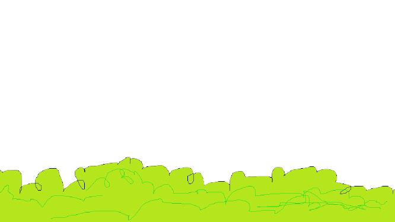

<!DOCTYPE html>
<html>

<head>
  <meta charset="utf-8">
  <meta name="viewport" content="width=device-width, initial-scale=1.0, user-scalable=1">
  <title>滾動視差作業</title>
  <style>
    body {
            height:3000px;  
         }
</style>
  <script type="text/javascript" src="https://cdnjs.cloudflare.com/ajax/libs/skrollr/0.6.30/skrollr.min.js"></script>
</head>

<body>
  <div class="background" style="position: fixed;
            top: 0;
            left: 0;
            z-index: 0;
            min-width: 100%;
            min-height: 100%;
            background: url('img/mountain.png') no-repeat center center fixed;
            -webkit-background-size: cover;">
  </div>
  <div style="position: fixed;
              bottom: 0;
              z-index: 0;
              min-width: 10000px;
              min-height: 375px;
              background: url('img/grass.png') repeat-x;"
        data-0="left: -8000px;" 
        data-10000="left: -7000px;"></div>

  <!-- <div class="sprite">
    
  </div> -->
  <div style="position: fixed;
              bottom: 0;
              left: -9000px;
              z-index: 0;
              min-width: 10000px;
              min-height: 375px;
              background: url('img/car.png') repeat-x;"
        data-0="left: 0px;" 
        data-10000="left: -5000px;"></div>
  <script type="text/javascript">
  var s = skrollr.init();
  </script>
</body>

</html>